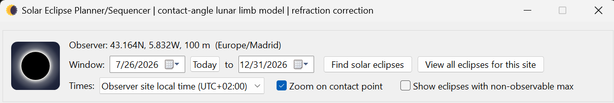
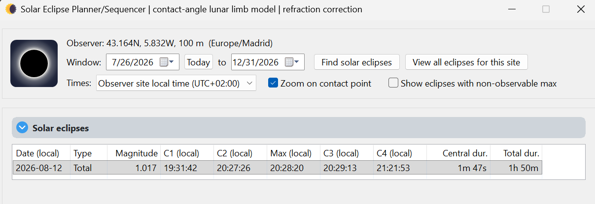
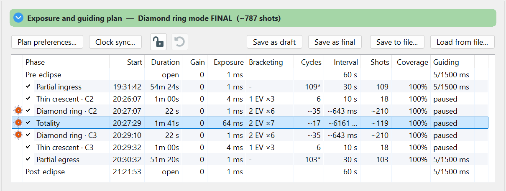
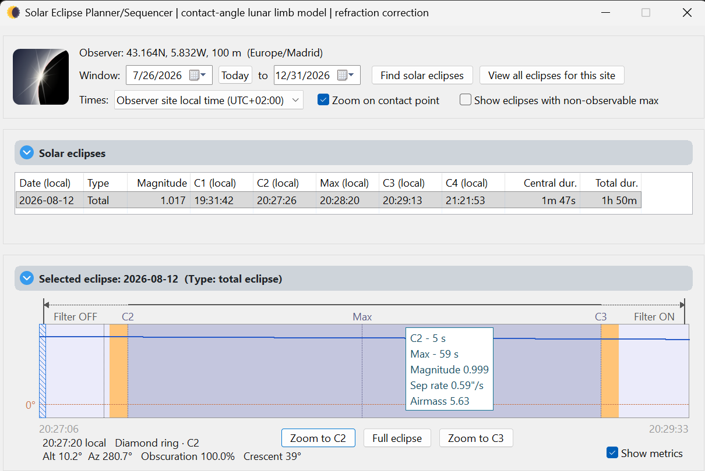

Planner basics
Find an eclipse for your observing site and build the plan the run console will follow. HelioMaker calculates and fills all contact times for you.
Open the planner from Tools ▸ Solar Eclipse Planner (shortcut
Ctrl+Shift+E). The window is titled Solar Eclipse Planner/Sequencer. It uses the observer
site (latitude, longitude and elevation) configured in HelioMaker. Make sure that is accurate before you
search, because it drives every contact time.

First: set your observing site
Before you open the eclipse planner, set the location where you plan to capture the eclipse. Open the Dynamic Target Tracking tool (the astronomer button) and select your observer site there. Its exact latitude, longitude, elevation and time zone are a key prerequisite for both designing and running the plan: they drive the timing of every phase.
Find an eclipse for your site
- Set the date range with the Window: pickers (a start date, to an end date). Today resets the start to the current date.
- Click Find solar eclipses to list every solar eclipse visible from your site in that window.
- Use Times: to switch the display between UTC time and Observer site local time (the local option shows the site's offset). The list's contact columns update to match.
- Show eclipses with non-observable max includes events whose maximum happens with the Sun below your horizon. This is useful when surveying events, but less useful when planning a capture.

Read the contact times & circumstances
Each row in the results list shows the event and its geometry for your site:
| Column | Meaning |
|---|---|
| Date | Date of the eclipse. |
| Type | Total, annular or partial for your location. |
| Magnitude | Fraction of the Sun's diameter covered at maximum. |
| C1 … C4 | The four contacts: C1, first contact (partial begins); C2, second contact (totality or annularity begins); C3, third contact (it ends); C4, fourth contact (partial ends). |
| Max | Time of maximum eclipse. |
| Central dur. / Total dur. | Duration of the central (total / annular) phase and of the overall eclipse. |
In local time mode the time columns carry a (local) suffix so you always know which clock you are
reading.
Build the plan
Select an event and HelioMaker derives a starting plan with a set of phases from the partials through the central phase and out again, each with its own exposure recipe. From here you:
- Open Plan preferences... to choose Safe or Diamond ring (Classical), choose Still or Live view, select the camera and guiding configuration, and enter the physically measured full solar disk exposure, camera gain and filter ND rating. See Plan preferences.
- Let HelioMaker derive the phase recipes from those inputs and Fred Espenak's eclipse exposure recommendations, then tune individual phases in the phase table. See Phase editor.
- Save your work: Save as draft keeps a draft copy; Save as final marks the plan approved (this is what the preflight checklist expects to see on eclipse day). Save to file... / Load from file... move a portable HelioMaker JSON plan between machines.
- For an auxiliary SharpCap sequence, choose Save to file... and select SharpCap Sequence File (*.scs) as the file type. This creates a stand-alone still-mode sequence for a second SharpCap instance, not a portable HelioMaker plan. Open the second camera and select its capture folder before running it on the selected eclipse date, with the capture PC's time zone matching the observer timezone. The second camera must support the plan's settings. This auxiliary sequence does not include HelioMaker safety cues, guiding, refocusing, alarms, telemetry or recovery. Test the complete sequence with the actual camera before eclipse day.

Use the Phase Editor to inspect and tune each phase
Select a phase in the plan table to load its settings into the Phase Editor below the table. The editor lets you adjust the phase's exposure time, gain, HDR bracket step and number of frames, repeat count, capture interval and other settings that apply to that phase.
For an HDR phase, expand Phase summary to preview the complete bracket as the actual sequence of exposure times, not just its base exposure and bracket notation. The summary also shows the total EV span, estimated time per HDR set and total exposure time. The Tips: panel displays HelioMaker's exposure recommendations for the currently selected phase, calculated from the plan's full solar disk reference exposure, filter density and eclipse mode. As you change the exposure or bracket settings, use the summary and Tips together to compare the resulting bracket with the recommendations before saving the plan.
The C2 and C3 diamond ring phases also provide Lead time (s): and Trail time (s):. These extend the selected phase before and after its contact time, allowing an experienced eclipse imager to fine tune how much capture time is assigned around the diamond ring and Baily's beads. For the normal workflow, let Plan preferences... derive and populate these values as part of the complete phase plan. Adjust them only when you have a specific imaging reason, then review the timeline and rehearse the revised plan. In Diamond ring (Classical) mode, these phase boundaries also determine the filter change points.

See Phase editor for all phase settings, cadence and coverage controls, guiding overrides and reset behaviour.
Preview the eclipse simulation
The planner draws a bitmap simulation of the eclipse for your site, plus a timeline. Use it to check the geometry and the phase layout before committing:
- Zoom controls frame the interesting moments: Zoom to totality / Zoom to annularity, Zoom to C2, Zoom to C3, and Full eclipse to zoom back out.
- Zoom on contact point focuses the preview on the limb where the diamond ring and Baily's beads appear.
- The timeline marks where the solar filter comes off (a Filter off marker) and flags a Meridian crossing during the event. This matters if your mount needs a meridian flip near totality.
